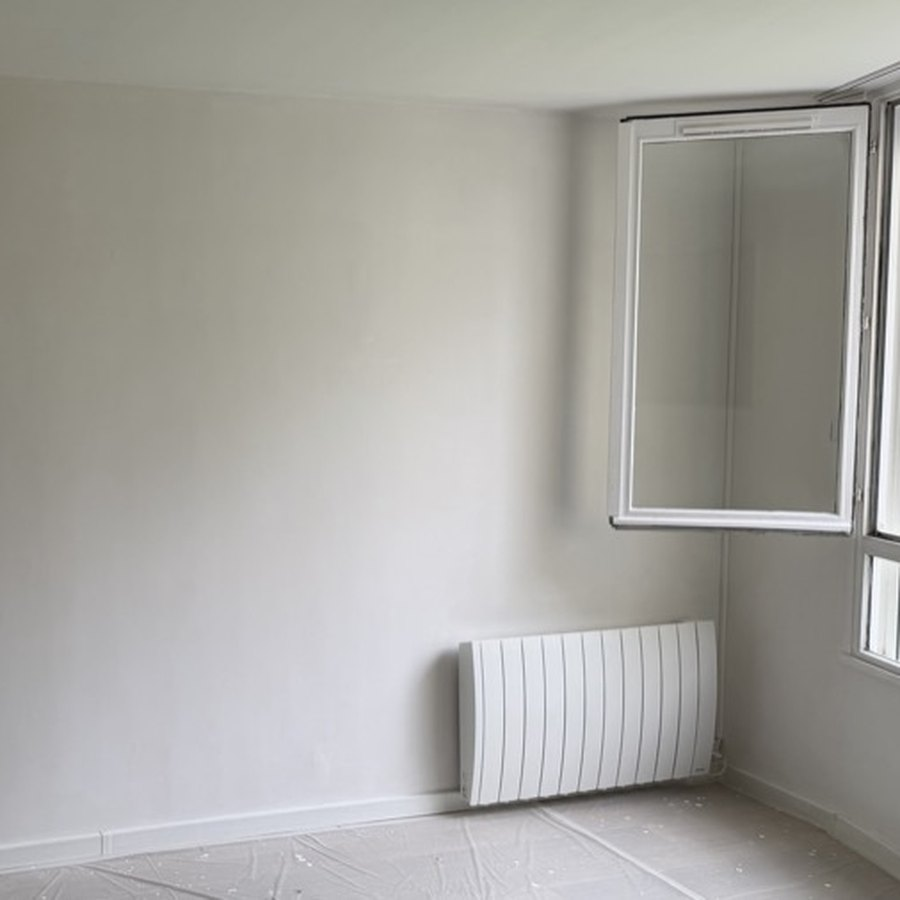

Débarras d’un local avant restitution : dans quel ordre s’y prendre
Vider, puis nettoyer. L’ordre paraît évident, et pourtant c’est l’erreur la plus fréquente : beaucoup font nettoyer avant d’avoir sorti le mobilier, et recommencent tout.

Commencer par trier, pas par porter
Avant de sortir quoi que ce soit, il faut séparer trois catégories : ce que l’entreprise conserve et réinstalle ailleurs, ce qui peut être revendu ou donné, et ce qui part au rebut. Ce tri prend une heure et fait gagner une demi-journée : sans lui, tout est manipulé deux fois, une première fois pour sortir et une seconde pour trier au pied de l’immeuble.
C’est aussi le moment de repérer ce qui relève d’une filière particulière : écrans et matériel informatique, onduleurs, piles, néons, extincteurs, pots de peinture. Ces déchets ne se mélangent pas aux encombrants ordinaires. Les archives papier méritent une décision à part : ce qui contient des données personnelles ou des éléments comptables ne se jette pas dans une benne ouverte.
Ce que révèle un local vide
Tant que les postes de travail sont en place, l’état réel du local reste invisible. Une fois vidé, tout ressort d’un coup : décoloration de la moquette à l’emplacement des caissons, traces de frottement derrière les bureaux, trous de chevilles et de goulottes, marques d’adhésif sur les cloisons vitrées, joints de sanitaires noircis.
C’est exactement ce que l’état des lieux de sortie va relever, et ce sur quoi un bailleur fondera ses retenues. D’où l’intérêt de ne pas enchaîner directement sur le nettoyage, mais de prendre le temps d’un tour complet pour décider ce qui mérite une reprise.
L’ordre qui fonctionne
- Trier sur place, en trois catégories, avant tout portage
- Protéger les parties communes : hall, palier, ascenseur, quai de livraison
- Réserver le monte-charge et vérifier les horaires autorisés par la copropriété
- Sortir le volume, du plus encombrant au plus petit
- Faire le tour du local vide et lister les reprises nécessaires
- Reprendre ce qui doit l’être : trous, raccords de peinture, joints
- Nettoyer en dernier, de haut en bas, sols compris
Faut-il qu’un responsable soit présent ?
Pas nécessairement, et c’est souvent impossible : déménagements d’entreprise, fermetures de site, locaux gérés à distance. Une remise de clés ou de badge suffit, avec un état des lieux photo avant et après. Nous conseillons toutefois un passage au début, le temps de trancher ce qui part et ce qui reste : c’est la seule décision qu’on ne peut pas prendre à votre place.
Un chantier à faire livrer ou un logement à rendre ?
Envoyez-nous des photos par SMS, nous vous répondons avec une estimation sous 24 h ouvrées.